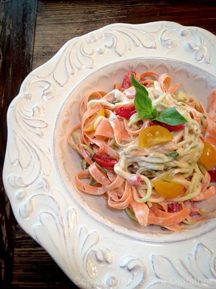

Herbes de Provence Alfredo Sauce and Garden Vegetables

~ raw, vegan, gluten-free ~
I have always been a fan of Alfredo sauce. In fact, it was one of my all-time favorite dishes on the menu when I use to eat at Red Robins. I loved the thick sauce that heavily coated the fettuccine noodles. BUT to be honest, I never felt that good afterward. That heavy thick sauce would sink right down into the pit of my stomach and set up camp.
It has been about six years now since I have had gluten and heavy creamed sauces and I have sorely missed those flavors and textures… until now, for now, I have a healthier version that doesn’t leave me with that bogged down and heavy feeling.
Using cashews and macadamia nuts made a perfect balance. The cashews have a slight sweetness to them, and macadamia nuts give the sauce a hint of buttery flavor. You could use skinned almonds in place of the cashews since they too have a neutral taste. I also used almond milk as the liquid base to give an extra level of creaminess. You could use water in its place but if at all possible try it first as the recipe indicates.
I chose to use Herbes de Provence spice because it adds a warm, sweet, and peppery herbal note to the creamy sauce. And although it isn’t required, making this sauce a day in advance will give the flavor and aroma time to develop properly. I posted a recipe below on how to make your own spice blend if you don’t have one on hand.
I hope you enjoy this refreshing dish. Please leave a comment below. Have a blessed and happy day, amie sue
Ingredients:
Sauce: yields 3 cups
- 1 cup raw cashews, soaked 2+ hours
- 1/4 cup macadamia nuts, soaked 2+ hours
- 1 1/2 cups almond milk
- 2 Tbsp raw apple cider vinegar
- 1 large garlic clove
- 1 tsp Herbes de Provence spice
- 1 tsp sea salt
- 1 tsp freshly ground black pepper
- 2 Tbsp nutritional yeast
Pasta dish:
- 4 large (= 6 cups spiralized) zucchinis, spiralized
- 3 large carrots ( = 2 cups ribbons), cut in ribbons
- 1/2 cup packed basil, chiffonaded
- 1 large red pepper ( = 1/2 cup diced)
- 1 cup cherry tomatoes, halved
- 1 cup cucumber, diced
Preparation:
Sauce:
- Soak the cashews and macadamia nuts in the same bowl. Once ready, drain, and rinse.
- In a high-powered blender place the almond milk, raw apple cider vinegar, garlic, Herbes de Provence spice, salt, pepper, nutritional yeast, cashews, and macadamia nuts… blend until creamy.
- If you need to make your own Herbes de Provence spice, combine the following ingredients in a jar and shake to combine; 1 tsp dried basil, 1 tsp dried marjoram, 1 tsp dried oregano, 1 Tbsp dried rosemary, and 1 tsp dried thyme.
- Depending on the blender, this can take 1-4 minutes.
- Stop the machine and rub some sauce between two fingers, if you feel grit, keep blending until smooth. Set aside.
Pasta dish:
- Spiralize the zucchini into noodles. If you want to soften them, place them in a shallow baking pan and sprinkle liberally with sea salt. The salt will draw the water out of the zucchini and make it limper. This process can take 30+ minutes, depending on how soft or firm you want them. When ready to use, rinse the salt off and dab the noodles with a paper towel to remove the excess water. Place in a large bowl.
- With a potato peeler, shred long carrot ribbons into the zucchini noodle bowl.
- Add basil, red pepper, cherry tomatoes, and cucumber. When cutting the cucumber, remove the seeds. The seeds can cause indigestion for some and will make your sauce watery.
- Toss with sauce and serve.
- Store remainder of sauce in the fridge for 2-3 days.
© AmieSue.com